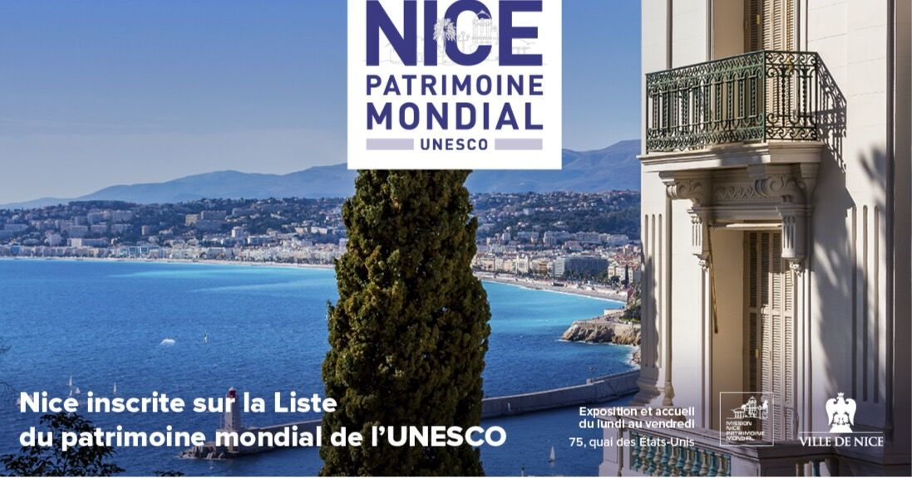

Les Piafs des Collines
Les Piafs des CollinesExplorez les environs
11 oct. 2021
Nissa la Bella

Représentante d'une "villégiature de riviera", Nice a intégré, mardi 27 juillet 2021, la liste du Patrimoine mondial de l'Unesco. Une nouvelle qui consacre l'architecture de la ville azuréenne, comme s'en est félicité Christian Estrosi, l'édile. Avec ses armes, dont "la douceur du climat hivernal et l'exotisme de la végétation", la cité s'est taillée une place de choix dans le tourisme français.
La ville de Nice a été classée ce mardi 27 juillet 2021 au Patrimoine mondial de l'Unesco au titre de "ville de la villégiature d'hiver de Riviera" pour son patrimoine architectural, paysager et urbanistique façonné par 200 ans d'histoire cosmopolite à partir de la fin du 18è siècle. "L'histoire de Nice, à la fois enracinée et ouverte, méditerranéenne et alpine, européenne et cosmopolite, a produit une architecture et un paysage uniques, un modèle pour un grand nombre d'autres villes du monde", s'est félicité le maire Christian Estrosi.
"C'est magnifique (...) C'est une ville d'une grande beauté qui a réussi le mélange entre son histoire et sa capacité à se réinventer", a commenté Muriel Mayette-Holtz, la directrice du théâtre national de Nice, mardi sur Europe 1. "Cette inscription consacre Nice comme archétype de la villégiature d'hiver de riviera avec son site exceptionnel, entre mer et montagne, et les diverses influences qui ont façonné son patrimoine", a salué de son côté et sur Twitter la ministre de la Culture, Roselyne Bachelot.
12 coups de canon ont été tirés depuis la colline du château pour fêter l’entrée de Nice au Patrimoine de l’Unesco.